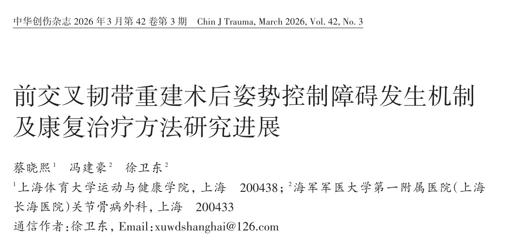
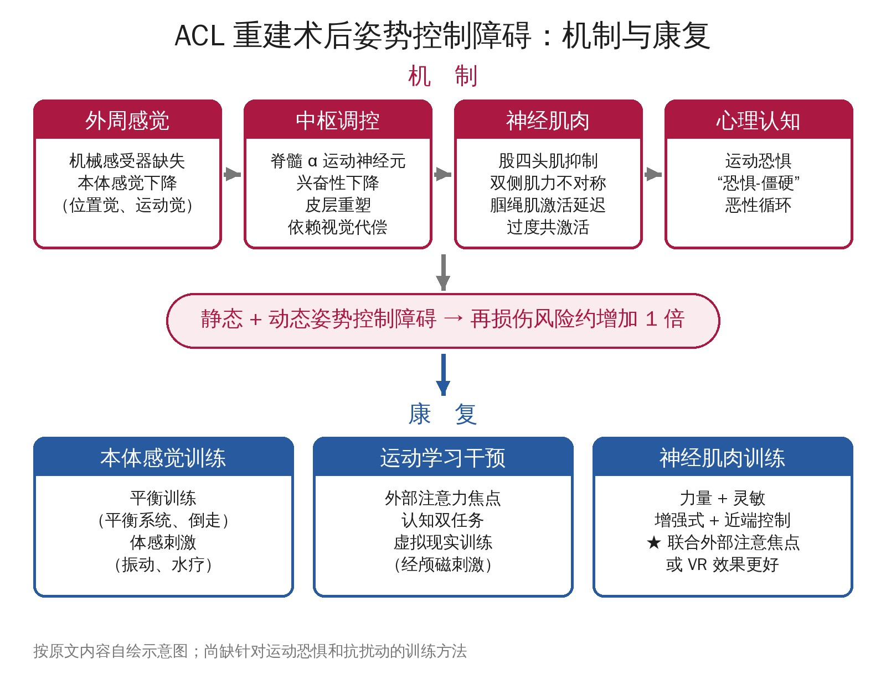

🔖原文首页（中华创伤杂志 2026 年第 42 卷第 3 期）
📚 文献卡片
▪ 题目：前交叉韧带重建术后姿势控制障碍发生机制及康复治疗方法研究进展
▪ 作者：蔡晓熙 · 冯建豪 · 徐卫东（通信作者）
▪ 机构：上海体育大学运动与健康学院；海军军医大学第一附属医院（上海长海医院）关节骨病外科
▪ 期刊：中华创伤杂志
▪ 年卷期：2026;42(3):329-336
▪ DOI：10.3760/cma.j.cn501098-20250807-00434
▪ 文章类型：综述（检索中国知网、万方、PubMed、Embase、Web of Science 至 2025 年 8 月，引用 85 篇，英文 62 篇、中文 23 篇）
▪ 关键词：前交叉韧带；运动损伤；康复；姿势控制
ACL 损伤是最常见的膝关节运动损伤，美国每年发病人数超过 20 万。ACL 重建术是恢复膝关节稳定性的“金标准”，但术后本体感觉和姿势控制障碍持续存在：恢复运动的青年运动员中仍有 30%～35% 会再次损伤 ACL；存在姿势控制障碍的患者，1 年内再次断裂的风险约为无障碍者的 2 倍。
• 静态障碍：单腿站立时压力中心摇摆幅度或速度增加，不稳定平面上更明显；这种下降可持续存在，术后 2 年甚至有恶化趋势
• 动态障碍：下蹲时摇摆增加；步行时反应延迟、生物力学不对称；跳跃落地时依赖躯干、骨盆和髋关节代偿，垂直地面反作用力不对称；应对机械扰动或视觉-认知双任务时稳定性和自动化程度下降
作者认为，姿势控制障碍应被重新理解为复杂的神经肌肉控制障碍，而不仅是“本体感觉差 + 肌力不足”，传统康复甚至加强康复效果都有限。

🔖全文框架示意：四类机制与三类康复方法（按原文内容自绘）
| 层面 | 机制要点 | 对应康复 |
|---|---|---|
| 外周感觉 | 机械感受器缺失 → 位置觉、运动觉下降（始动环节） | 本体感觉训练：平衡训练、振动、水疗 |
| 中枢调控 | 脊髓 α 运动神经元抑制；皮层重塑；从感觉-运动策略转向依赖视觉 | 运动学习干预：外部注意力焦点、双任务、VR、经颅磁刺激 |
| 神经肌肉 | 股四头肌抑制、双侧不对称、腘绳肌激活延迟、过度共激活 | 神经肌肉训练：力量、灵敏、增强式、近端控制 |
| 心理认知 | 运动恐惧 → 僵硬代偿 → “恐惧-僵硬”恶性循环 | 目前缺乏针对性方法 |
一句话概括：姿势控制障碍是“外周-中枢-肌肉-心理”多环节共同作用的结果，单一疗法难以奏效，联合干预（如神经肌肉训练 + 外部注意力焦点或 VR）效果更好。
• 术后关节位置觉再现误差与静态姿势控制的总体、前后、左右稳定指数均呈正相关
• 运动觉下降会降低静态时压力中心的稳定性，并延长动态落地后的稳定时间
• ACL 内的高尔基腱器官、帕西尼小体、鲁芬尼末梢等机械感受器在损伤后缺失，阻断了传入信息
• 结果：脊髓层面原本对抗胫骨前移的保护性反射受抑制；大脑皮层层面信息接收和处理异常
• 脊髓层面：肿胀、疼痛、炎症干扰Ⅰ、Ⅲ、Ⅳ型传入纤维或破坏 γ 环路，抑制 α 运动神经元；皮质脊髓通路兴奋性下降，运动诱发电位幅度减小
• 脑电研究：单腿站立时对侧初级运动皮层 θ 波功率增加，提示需要更强的神经驱动来维持膝关节稳定；同侧前运动皮层 α-2 波功率升高
• 不稳定平面站立时，运动、额叶、体感和视觉皮层激活都显著增加，说明复杂任务更依赖注意力和多感觉反馈
• 功能连接：患侧站立时，前额叶-顶叶、枕叶-运动皮层、枕叶-顶叶连接增强，大脑从感觉-运动策略转向视觉-运动策略
• 代价：过度依赖视觉，在黑暗或视觉场景移动时容易姿势不稳
• 关节源性肌肉抑制是核心表现，主要累及股四头肌
• 股四头肌和腘绳肌肌力均与单腿下落时的稳定时长、泡沫平面上的摇摆指数呈显著负相关
• 患侧股四头肌明显弱于健侧，这种不对称与步态支撑期的膝屈曲力矩、旋转力矩和屈曲角度不对称相关
• 荟萃分析：步行和上下楼梯时腘绳肌与股四头肌共激活增大，屈曲动作中腘绳肌激活延迟；前者让关节变僵硬，后者使其不能及时限制胫骨前移
• 高恐惧组在单腿反向侧跳初次触地时，躯干屈曲更大、股二头肌激活和前后共收缩更高：保护了移植物，但关节更僵硬，牺牲了稳定性
• 运动恐惧与姿势稳定性负相关，且随时间增强：术后 6 个月为弱相关，12 个月增强为中等相关
• 运动恐惧评分与小脑、杏仁核、颞中回、颞极的激活程度正相关，可能形成“恐惧-僵硬”恶性循环
• 作者指出：运动恐惧并非必然发生，但一旦存在就会加重障碍；现有研究多为“外周-中枢-效应”单向思路，因素之间的双向调节仍不清楚
• 平衡训练：在常规康复上加 Pro-kin 平衡系统训练，睁眼和闭眼时的运动轨迹面积、长度和被动角度再现误差都更小
• 跑步机倒走：按坡度递增分为 A～D 四组，各组的位置觉和运动觉均较对照组显著改善
• 振动训练：结合常规康复可改善位置觉和运动觉，可能与刺激关节、皮肤感受器和前庭输入、提高皮层运动神经元兴奋性有关
• 水疗：本体感觉显著改善，坐-站-坐任务中腘绳肌和股四头肌的活动更接近健康人；水的阻力提供渐进抗阻，浮力减轻负荷、止痛
• 外部注意力焦点（EF）：比内部注意力焦点落地技术更好——膝外翻更小、躯干侧屈更小、站距更窄、双足触地更对称
• 8 周 EF + 神经肌肉训练：下落跳峰值膝屈曲角度增加，膝内旋、外翻角度和伸展、外展力矩以及峰值垂直地面反作用力下降；另一研究显示下肢和躯干协调性提高
• 机制：EF 增强对侧运动皮层和双侧顶叶、枕叶感觉皮层的激活
• 认知双任务是双刃剑：多数研究显示会降低跳跃表现、增加摇摆和步态不对称；但也有研究发现双任务下步行的髋关节代偿减少，双腿差异缩小，可能迫使大脑采用更“自动化”的策略
• 虚拟现实（VR）：VR + 平衡训练后，受干扰后恢复压力中心的时间、膝关节反应时间和位置觉均优于单纯平衡训练
• 经颅磁刺激：直接作用于特定脑区，被认为可通过诱导神经可塑性改善平衡
• 整合力量、灵敏、增强式（快速伸缩）和近端控制练习
• 能改善本体感觉、屈伸肌力和平衡（但该研究的平衡评估基于主观量表）
• 能改善跳跃落地：垂直跳触地时膝屈曲角度和力矩更大，下落跳时髋屈曲角度更大、髋屈曲力矩更小——更“柔和”的落地
• 局限：即使完成标准神经肌肉训练，术后 12～15 个月单腿深蹲时仍有双侧动态姿势控制障碍
• 联合更好：联合 EF 的神经肌肉训练优于单纯训练；VR + 平衡训练更能提高膝屈伸峰值扭矩、缩短反应时间
当前挑战：
• 临床评估无法复现实验室的精确量化
• 各诱因间的双向调节机制未知
• 缺乏针对运动恐惧和抗物理扰动的训练方法
未来方向：
• 推广便携式、易普及的客观动态评估工具
• 长期随访 + 统计模型解析各因素的作用路径
• 借鉴其他人群的有效方法，如普拉提等身心训练（可缓解慢性腰痛人群的运动恐惧）
• 通过大样本或荟萃分析量化验证现有观点
• 文章性质：叙述性综述。虽然交代了检索数据库和纳入标准，但没有文献质量评价和定量合成，结论属于作者的归纳
• 亮点：用“外周感觉-中枢调控-神经肌肉-心理认知”四层框架串起机制，并与三类康复方法一一对应，思路清晰；明确指出了运动恐惧和抗扰动训练的空白
• 因果链偏推论：从本体感觉缺失到中枢重塑再到肌肉障碍的链条，多数证据来自横断面相关研究，作者自己也承认双向机制尚不清楚
• 干预证据偏弱：引用的干预研究多为小样本、单中心，部分为国内期刊研究；没有给出训练频次、强度、周期等处方参数，难以直接照搬
• 部分引用与论点不完全对应：视觉冲突导致姿势不稳引用了一篇帕金森病研究，VR 机制引用的是脑卒中研究；“2 倍再断裂风险”的引文之一是核心稳定性综述；30%～35% 再损伤率引自一篇人工韧带综述
• 文字细节：“膝关节生物力不对称性”应为“生物力学”
① 先认识：站不稳不只是“肌力差”，还涉及本体感觉、大脑策略和恐惧心理
② 本体感觉：平衡训练（含闭眼、不稳定平面）、倒走、振动、水疗
③ 运动学习：用外部注意力焦点给提示（如“推开地面”“落向目标”），逐步加入双任务和 VR
④ 神经肌肉：力量 + 灵敏 + 增强式 + 近端控制，重点练“柔和落地”
⑤ 联合干预：神经肌肉训练 + EF 或 VR 效果更好
★ 注意：关注运动恐惧和视觉依赖；神经肌肉训练后 1 年仍可能残留障碍，重返运动前要复评
欢迎关注悦美力公众号，获取更多物理治疗的专业知识！
📄参考文献：
蔡晓熙, 冯建豪, 徐卫东. 前交叉韧带重建术后姿势控制障碍发生机制及康复治疗方法研究进展[J]. 中华创伤杂志, 2026, 42(3): 329-336. DOI: 10.3760/cma.j.cn501098-20250807-00434.
原文无插图；首页为原文截图，框架示意图和表格为编者按原文内容整理绘制，仅用于学术交流。原文版权归中华医学会所有。